Basic usage
The main purpose of the Gnuplot.jl package is to send data and commands to the underlying gnuplot process, in order to generate plots. Unlike other packages, however, the actual commands to plot, or the plot attributes, are not specified through function calls. This is what makes Gnuplot.jl easy to learn and use: there are no functions or keywords names to memorize[1].
The most important symbols exported by the package are the @gp (for 2D plots) and @gsp (for 3D plots) macros. The simplemost example is as follows:
using Gnuplot
@gp 1:20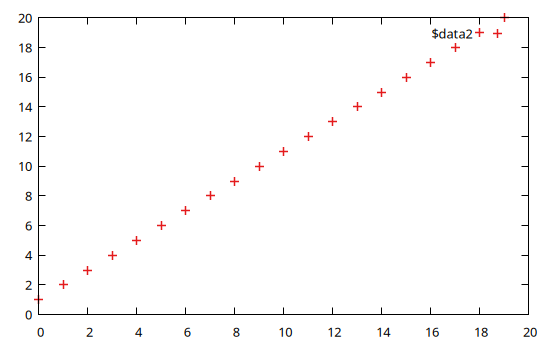
The plots are displayed either in an interactive window (if running in the Julia REPL), as an inline image (if running in Jupyter) or in the plot pane (if running in Juno). See Display options for further informations.
Both the @gp and @gsp macros accept any number of arguments, whose meaning is interpreted as follows:
one, or a group of consecutive, array(s) build up a dataset. The different arrays are accessible as columns 1, 2, etc. from the gnuplot process. The number of required input arrays depends on the chosen plot style (see gnuplot documentation);
a string occurring before a dataset is interpreted as a gnuplot command (e.g.
set grid);a string occurring immediately after a dataset is interpreted as a plot element for the dataset, by which you can specify
usingclause,withclause, line styles, etc.;the special symbol
:-, whose meaning is to avoid starting a new plot (if given as first argument), or to avoid immediately running all commands to create the final plot (if given as last argument). Its purpose is to allow splitting one long statement into multiple (shorter) ones.
The above list shows all the fundamental concepts to follow the examples presented below. The @gp and @gsp macros also accepts further arguments, but their use will be discussed in Advanced usage.
2D plots
Here we will show a few examples to generate 2D plots. The examples are intentionally very simple to highlight the behavior of Gnuplot.jl. See Examples for more complex ones.
Remember to run:
using Gnuplotbefore running the examples.
Simple examples involving just gnuplot commands:
Plot a sinusoid:
@gp "plot sin(x)"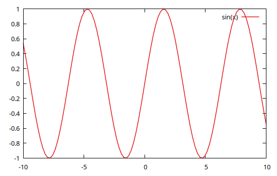
Plot two curves:
@gp "set key left" "plot sin(x)" "pl cos(x)"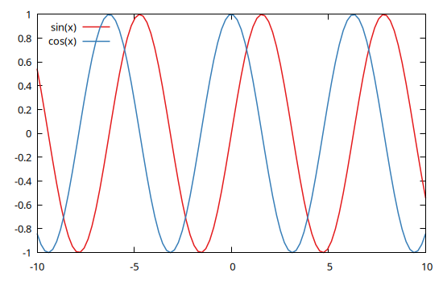
Note that all gnuplot commands can be abbreviated as long as the resulting string is not ambiguous. In the example above we used pl in place of plot.
Split a @gp call in three statements:
@gp "set grid" :-
@gp :- "p sin(x)" :-
@gp :- "plo cos(x)"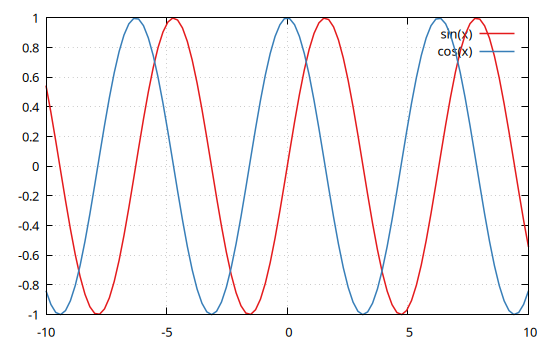
The trailing :- symbol means the plot will not be updated until the last statement.
Send data from Julia to gnuplot:
Plot a parabola
@gp (1:20).^2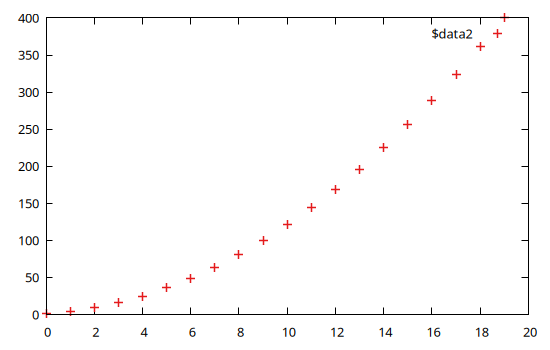
Plot a parabola with scaled x axis, lines and legend
x = 1:20
@gp "set key left" x ./ 20 x.^2 "with lines tit 'Parabola'"
Multiple datasets, logarithmic axis, labels and colors, etc.
x = 1:0.1:10
@gp "set grid" "set key left" "set logscale y"
@gp :- "set title 'Plot title'" "set label 'X label'" "set xrange [0:*]"
@gp :- x x.^0.5 "w l tit 'Pow 0.5' dt 2 lw 2 lc rgb 'red'"
@gp :- x x "w l tit 'Pow 1' dt 1 lw 3 lc rgb 'blue'"
@gp :- x x.^2 "w l tit 'Pow 2' dt 3 lw 2 lc rgb 'purple'"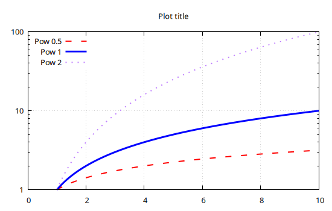
The above example lacks the trailing :- symbol. This means the plot will be updated at each command, adding one curve at a time.
Keywords for common commands
In order to avoid typing long, and very frequently used gnuplot commands, Gnuplot.jl provides a few keywords which can be used in both @gp and @sgp calls:
xrange=[low, high]=>"set xrange [low:high];yrange=[low, high]=>"set yrange [low:high];zrange=[low, high]=>"set zrange [low:high];cbrange=[low, high]=>"set cbrange[low:high];key="..."=>"set key ...";title="..."=>"set title \"...\"";xlabel="..."=>"set xlabel \"...\"";ylabel="..."=>"set ylabel \"...\"";zlabel="..."=>"set zlabel \"...\"";cblabel="..."=>"set cblabel \"...\"";xlog=true=>set logscale x;ylog=true=>set logscale y;zlog=true=>set logscale z;margins=...=>set margins ...;lmargin=...=>set lmargin ...;rmargin=...=>set rmargin ...;bmargin=...=>set bmargin ...;tmargin=...=>set tmargin ...;
All such keywords can be abbreviated to unambiguous names.
By using the above keywords the first lines of the previous example:
@gp "set grid" "set key left" "set logscale y"
@gp :- "set title 'Plot title'" "set label 'X label'" "set xrange [0:*]"can be replaced with a shorter version:
@gp "set grid" k="left" ylog=true
@gp :- tit="Plot title" xlab="X label" xr=[0,NaN]where NaN in the xrange keyword means using axis autoscaling.
Plot matrix as images
Gnuplot.jl can display a 2D matrix as an image:
img = randn(Float64, 8, 5)
img[2,:] .= -5
@gp img "w image notit"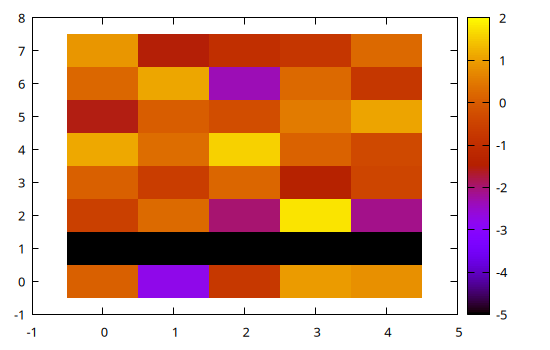
Note that the first index in the img matrix corresponds to the rows in the displayed image.
A simple way to remember the convention is to compare how a matrix is displayed in the REPL:
img = reshape(1:15, 5, 3)5×3 reshape(::UnitRange{Int64}, 5, 3) with eltype Int64:
1 6 11
2 7 12
3 8 13
4 9 14
5 10 15and its image representation, which is essentially upside down (since the Y coordinates increase upwards):
@gp img "w image notit"
Also note that the img[1,1] pixel is shown at coordinates x=0, y=0. See Image recipes for further info.
3D plots
3D plots follow the same rules as 2D ones, just replace the @gp macro with @gsp and add the required columns (according to the plotting style).
E.g., to plot a spiral increasing in size along the X direction:
x = 0:0.1:10pi
@gsp cbr=[-1,1].*30 x x.*sin.(x) x.*cos.(x) x./20 "w p pt 7 ps var lc pal"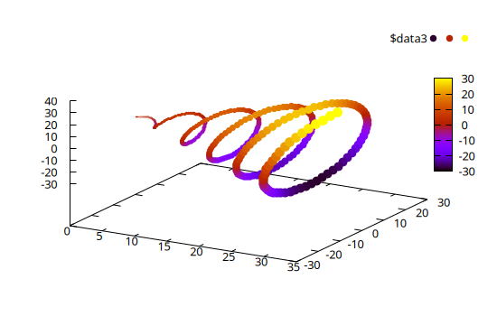
Note that the fourth array in the dataset, x./20, is used as by gnuplot as point size (ps var). Also note that all the keywords discussed above can also be used in 3D plots.
Palettes and line types
The Gnuplot.jl package comes with all the ColorSchemes palettes readily available.
A gnuplot-compliant palette can be retrieved with palette(), and used as any other command. The previous example may use an alternative palette with:
x = 0:0.1:10pi
@gsp palette(:viridis) cbr=[-1,1].*30 :-
@gsp :- x x.*sin.(x) x.*cos.(x) x./20 "w p pt 7 ps var lc pal"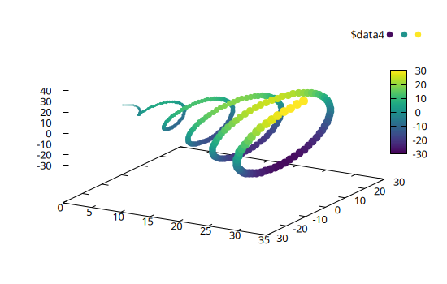
The palette levels may be easily stretched by using the palette_levels() and modifying the numeric levels, e.g.:
x = 0:0.1:10pi
v, l, n = palette_levels(:viridis)
@gsp palette(v.^0.25, l, n) cbr=[-1,1].*30 :-
@gsp :- x x.*sin.(x) x.*cos.(x) x./20 "w p pt 7 ps var lc pal"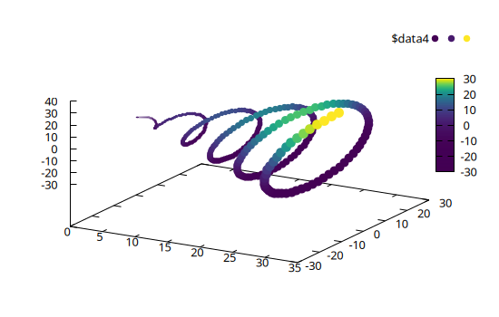
The list of all available palette can be retrieved with palette_names():
julia> palette_names()1190-element Vector{Symbol}: :tableau_colorblind :Rushmore1 :flag_kw :managua100 :broc :flag_usco :Monet :PRGn_3 :flag_mf :tableau_winter ⋮ :copper :Juarez :brocO :Set3_9 :BuPu_5 :Set1_8 :coolwarm :picasso :avocado
The ColorSchemes palettes can also be used to generate line type colors, and optionally the line width, point size and dashed pattern, by means of the linetypes() function, e.g.
@gp key="left" linetypes(:Set1_5, lw=2)
for i in 1:10
@gp :- i .* (0:10) "w lp t '$i'"
end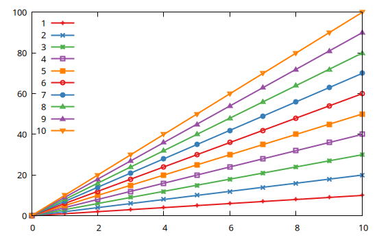
@gp key="left" linetypes(:Set1_5, dashed=true, ps=2)
for i in 1:10
@gp :- i .* (0:10) "w lp t '$i'"
end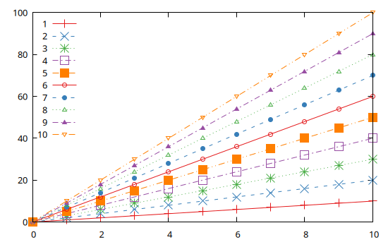
The first plot features the :Set1_5 palette, with solid lines whose width is 2 times the default. The second plot shows the same palette but default line widths are 1, default point size is 2 (for the first N line types, where N is the number of discrete colors in the palette), and the dashed pattern is automatically changed.
As discussed in Options, you may set a default line types for all plots with:
push!(Gnuplot.options.init, linetypes(:Set1_5, lw=1.5, ps=1.5))All plot in this documentation were generated with these settings.
Exporting plots to files
Gnuplot.jl can export all plots (as well as multiplots, see Multiplot) to an external file using one of the many available gnuplot terminals. To check which terminals are available in your platform type:
julia> terminals()55-element Vector{String}: "caca" "cairolatex" "canvas" "cgm" "context" "domterm" "dpu414" "dumb" "dxf" "emf" ⋮ "texdraw" "tikz" "tkcanvas" "unknown" "vttek" "wxt" "x11" "xlib" "xterm"
(see also terminal() to check your current terminal).
Once you choose the proper terminal (i.e. format of the exported file), use the save() function to export. As an example, all the plots in this page have been saved with:
save(term="pngcairo size 550,350 fontscale 0.8", output="assets/output.png")Note that you can pass both the terminal name and its options via the term= keyword. See Gnuplot terminals for further info on the terminals.
Gnuplot scripts
Besides exporting plots in image files, Gnuplot.jl can also save a script, i.e. a file containing the minimum set of data and commands required to re-create a figure using just gnuplot.
The script allows a complete decoupling of plot data and aethetics, from the Julia code used to generate them. With scripts you can:
- modify all aesthetic details of a plot without re-running the (possibly complex and time-consuming) code used to generate it;
- share both data and plots with colleagues without the need to share the Julia code.
To generate a script for one of the examples above use:
save("script.gp")after the plot has been displayed. Note that when images or large datasets are involved, save() may store the data in binary files under a directory named <script name>_data. In order to work properly both the script and the associated directory must be available in the same directory.
E.g., the following code:
x = 1:10
@gp x x.^2 "w l"
save("script1.gp")will produce the following file, named script1.gp:
reset session
$data1 << EOD
1 1
2 4
3 9
4 16
5 25
6 36
7 49
8 64
9 81
10 100
EOD
plot \
$data1 w l
set outputWhile the following:
img = randn(100, 300);
@gp "set size ratio -1" "set autoscale fix" img "flipy with image notit"
save("script2.gp")will produce:
reset session
set size ratio -1
set autoscale fix
plot \
'./script2_data/jl_OQrt9A' binary array=(300, 100) flipy with image notit
set outputThe above scripts can be loaded into a pure gnuplot session (Julia is no longer needed) as follows:
gunplot> load 'script1.gp'
gunplot> load 'script2.gp'to generate a plot identical to the original one.
The purpose of gnuplot scripts is to allow sharing all data, alongside a plot, in order to foster collaboration among scientists and replicability of results. Moreover, a script can be used at any time to change the details of a plot, without the need to re-run the Julia code used to generate it the first time.
Finally, the scripts are the only possible output when Dry sessions are used (i.e. when gnuplot is not available in the user platform.